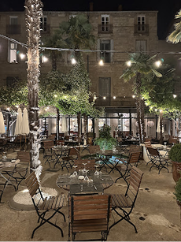
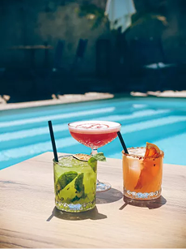
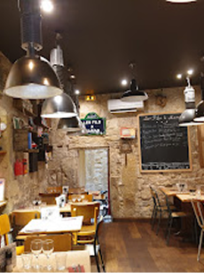
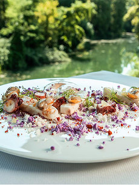

Les Bains de Montpellier
Les Bains est une adresse emblématique de Montpellier, mêlant cuisine raffinée et cadre élégant au cœur de l’ancien établissement thermal.

Le Jardin des Frangins
Le Jardin des Frangins offre une cuisine généreuse dans une ambiance conviviale, avec une jolie terrasse cachée au cœur de Montpellier.

Les Fils à Maman
Les Fils à Maman est un restaurant où l’on se régale de plats “comme chez maman”, dans une déco vintage , et une ambiance chaleureuse et gourmande.

La Réserve Rimbaud
La Réserve Rimbaud propose une cuisine gastronomique raffinée dans un cadre verdoyant en bord du Lez, alliant élégance et tranquillité.